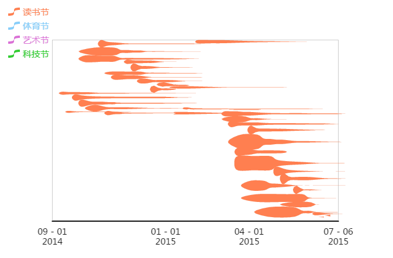
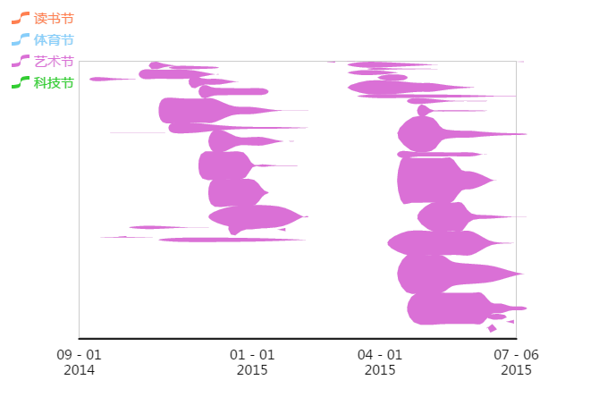
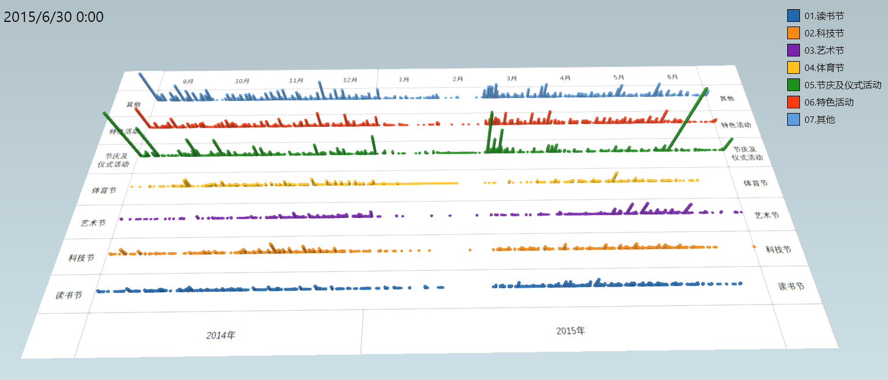

最早的时候，图表是一种流传于研究者内部的表达形式，方便交流，常常出现在各种专业的研究报告里。会让人有一种错觉：图表那都是高级货。而大多普通民众接触的主要是文字，而图片也多是照片一类的证据罢了。
时至今日，随着数据的兴起，数字表格和图表已经进入了寻常百姓家中，也由此衍生出了一个新兴词汇——数据可视化。
于是，图表的地位开始日渐凸显，那么关于图表如何更加直观和美观地表达出来显然自然成为了一个热点。所以，打开网页搜索数据可视化的时候，我们开始能接触到越来越多的创意性图表。
本文将要介绍的就是一种全新的表达方式，那么进入主题：Echarts系列之——事件河流图。
事件河流图是什么？
事件河流图有个非常洋气的英文名：Event River。然后我以这个为关键词去搜索，发现了一个事实，搜索不到国外的网站。大约这个图表是国人发明的吧？
（国人发明的就好办了，就没有翻译的问题了，反正我随便说啥也没关系）
所以说，事件河流图就是一种用时间轴凸显事件发生情况的图表。如果觉得比较抽象的话，先上图：
图1 ECharts事件河流图示意
这是ECharts上的示例图表，具体来说，就是百度研究了自己的新闻点击数据，首先分了个类，然后在不同日期看这些新闻点击数量的变化。
举个例子来说，阿里巴巴上市最早在2014年5月1日，但是关注的人不多，然后后面几天大家开始关注了，到同年5月3日达到最高峰，之后开始衰减。到5月5日之后就鲜有关注了。
这段描述可以和数据相关的代码一起看：
{
name: "阿里巴巴上市",
weight: 123,
evolution: [
{
"time": "2014-05-01",
"value": 14,
},
{
"time": "2014-05-02",
"value": 34,
},
{
"time": "2014-05-03",
"value": 60,
},
{
"time": "2014-05-04",
"value": 40,
},
{
"time": "2014-05-05",
"value": 10,
}
]
}
上面一段代码就是“阿里巴巴上市”这个新闻在几天内的变化情况，具体如下：
- name:这一事件的名称
- weight:这一事件的权重（决定了其在图片上的位置高低）
- time:这一事件发生的时间
- value:这一事件的指数
总体来说，事件河流图的2大要素就是：时间、指数，通过组合形成这一图表。
如何制作事件河流图？
上面的内容已经大致上把事件河流图的一些要素介绍清楚了。而具体如何制作也有了基本陈述，相信以大家的聪明才智，想要复刻一套图表完全不在话下。
但是，对于数据的分析人员而言，掌握事件河流图的制作方式只能仅仅当成一种工具来用，更重要的是如何把这个方法应用到实际的数据分析中去，所以，这里我会结合具体用例呈现。
老规矩，先上图。

图2 事件河流图a——读书节
图3 事件河流图b——艺术节是不是觉得有点污？都是一坨一坨的。嗯，其实我也这么觉得。
还是先解释下吧，实际上这个图是关于闵行区所有学生在2014-2015学年中四节活动（读书节、体育节、艺术节、科技节）随时间变化的开展情况的事件河流图。通过读书节和艺术节的对比，
可以明显看到，读书节开展参差不齐，活动开始什么时间点都有，而活动时间也是千奇百怪，甚至有很多是延续一个学期甚至横跨两个学期的；相对而言，艺术节就比较集中了，而且持续时间也先对更短，基本上就是1个月内肯定搞定了的。
这边就简单做个还原吧。也就是从原始数据到成图的过程，以一个学校的艺术节为例：
- 选择数据
- 数据转换
- 作图
首先，找到主题活动数据表，取三个字段：体验类型（TYLX）、活动名称（HDMC）开始时间（HDKDSJ）、结束时间（HDJSSJ），并计算人数，如下表：
| 体验类型 | 活动名称 | 开始时间 | 结束时间 | 参与人数 |
|---|---|---|---|---|
| 科技节 | 开学典礼 | 2014-09-01 | 2014-09-01 | 137 |
| 科技节 | 安全教育周 | 2014-09-01 | 2014-10-05 | 43 |
| 科技节 | 安全教育周 | 2014-09-01 | 2014-09-05 | 43 |
| 读书节 | 第十七届推普周活动 | 2014-09-15 | 2014-09-22 | 203 |
| 科技节 | 第十七届推普周活动 | 2014-09-15 | 2014-09-22 | 92 |
| 科技节 | 践行社会主义价值观”动员活动 | 2014-09-29 | 2014-09-29 | 153 |
| 科技节 | 缅怀革命先烈，争做四好少年 | 2014-09-30 | 2014-09-30 | 96 |
| 艺术节 | 快乐参与展我自信体验成功 | 2014-10-08 | 2014-10-31 | 46 |
| 艺术节 | 校园艺术节 | 2014-10-08 | 2014-10-30 | 173 |
| 艺术节 | 校园艺术节 | 2014-10-08 | 2014-10-31 | 1815 |
| 读书节 | 第十七届推普周活动 | 2014-10-15 | 2014-10-22 | 43 |
| 艺术节 | 校园艺术节 | 2014-10-18 | 2014-10-31 | 45 |
| 艺术节 | 少代会 | 2014-10-20 | 2014-10-20 | 70 |
| 科技节 | 校园电影阳光行 | 2014-11-04 | 2014-11-12 | 81 |
| 科技节 | 学校班主任节 | 2014-11-17 | 2014-11-28 | 44 |
| 体育节 | 学校运动会 | 2014-12-12 | 2014-12-12 | 2403 |
| 艺术节 | 学校英语节 | 2014-12-15 | 2015-01-05 | 86 |
| 体育节 | 学校运动会 | 2014-12-22 | 2014-12-22 | 36 |
| 读书节 | 读书漂流，欢乐共享3 | 2015-03-09 | 2015-03-23 | 1 |
| 读书节 | 读书漂流，欢乐共享2 | 2015-03-09 | 2015-03-23 | 48 |
| 读书节 | 读书漂流，欢乐共享1 | 2015-03-09 | 2015-03-23 | 3 |
| 科技节 | 低碳生活我们在行动 | 2015-05-15 | 2015-05-15 | 3 |
| 科技节 | 节约用水从我做起”水资源保护知识讲座 | 2015-05-18 | 2015-05-18 | 3 |
| 科技节 | 《水资源保护和利用》知识竞赛 | 2015-05-18 | 2015-05-18 | 1 |
| 科技节 | 垃圾分类，大家给力 | 2015-05-25 | 2015-05-25 | 3 |
有了数据，那么就要做一步转换，由于事件河流图的横坐标是以每一天为单位的，那么就需要我们以天为单位来作图
先理一理思路，现在有了开始时间和结束时间，所以，我们要把每个活动重复（结束时间-开始时间+1）次，这里就要利用累计次数的概念了。
然后，实际操作，将上表命名为【汇总数据】，并在Excel里写公式，得到下表：
| id | 体验类型 | 活动名称 | 开始时间 | 结束时间 | 参与人数 | 日期 |
|---|---|---|---|---|---|---|
| 0 | 科技节 | 开学典礼 | 2014-09-01 | 2014-09-01 | 137 | 2014-09-01 |
| 1 | 科技节 | 安全教育周 | 2014-09-01 | 2014-10-05 | 43 | 2014-09-01 |
| 2 | 科技节 | 安全教育周 | 2014-09-01 | 2014-10-05 | 43 | 2014-09-02 |
| 3 | 科技节 | 安全教育周 | 2014-09-01 | 2014-10-05 | 43 | 2014-09-03 |
| 4 | 科技节 | 安全教育周 | 2014-09-01 | 2014-10-05 | 43 | 2014-09-04 |
| 5 | 科技节 | 安全教育周 | 2014-09-01 | 2014-10-05 | 43 | 2014-09-05 |
| 6 | 科技节 | 安全教育周 | 2014-09-01 | 2014-10-05 | 43 | 2014-09-06 |
| 7 | 科技节 | 安全教育周 | 2014-09-01 | 2014-10-05 | 43 | 2014-09-07 |
| 8 | 科技节 | 安全教育周 | 2014-09-01 | 2014-10-05 | 43 | 2014-09-08 |
| 9 | 科技节 | 安全教育周 | 2014-09-01 | 2014-10-05 | 43 | 2014-09-09 |
| 10 | 科技节 | 安全教育周 | 2014-09-01 | 2014-10-05 | 43 | 2014-09-10 |
| ... | ... | ... | ... | ... | ... | ... |
具体公式如下：
| id | 体验类型 | 活动名称 | 开始时间 | 结束时间 | 参与人数 | 日期 |
|---|---|---|---|---|---|---|
| =IF(A1="id”,0,A1+1) | =VLOOKUP($A2,汇总数据!$A:$F,COLUMN(B2),1) | =VLOOKUP($A2,汇总数据!$A:$F,COLUMN(C2),1) | =VLOOKUP($A2,汇总数据!$A:$F,COLUMN(d2),1) | =VLOOKUP($A2,汇总数据!$A:$F,COLUMN(e2),1) | VLOOKUP($A2,汇总数据!$A:$F,COLUMN(f2),1) | =IF(B2&C2&D2&E2=B1&C1&D1&E1,G1+1,D2) |
然后合并一下同一天出现的同一个活动的数据，再改一下数据格式就可以贴到相应的代码里面了。
先来段代码：
option = {
title : {
text: '四节活动开展情况'
},
tooltip : {
trigger: 'item',
enterable: true
},
legend: {
data:['读书节', '体育节','艺术节','科技节'],
x:'right',
},
xAxis : [
{
type : 'time',
boundaryGap: [0.05,0.1]
}
],
series : [
{
name: "科技节",
type: "eventRiver",
//weight: Math.random()*100,
itemStyle: {
normal: {
label: {
show: false
}
}
},
data: [
{
name: "开学典礼",
//weight: Math.random()*100,
evolution: [
{"time":"2014-09-01","value":137}
]
},
{
name: "安全教育周",
//weight: Math.random()*100,
evolution: [
{"time":"2014-09-01","value":43},
{"time":"2014-09-02","value":43},
{"time":"2014-09-03","value":43},
{"time":"2014-09-04","value":43},
{"time":"2014-09-05","value":43},
{"time":"2014-09-06","value":43},
{"time":"2014-09-07","value":43},
{"time":"2014-09-08","value":43},
{"time":"2014-09-09","value":43},
{"time":"2014-09-10","value":43},
{"time":"2014-09-11","value":43},
{"time":"2014-09-12","value":43},
{"time":"2014-09-13","value":43},
{"time":"2014-09-14","value":43},
{"time":"2014-09-15","value":43},
{"time":"2014-09-16","value":43},
{"time":"2014-09-17","value":43},
{"time":"2014-09-18","value":43},
{"time":"2014-09-19","value":43},
{"time":"2014-09-20","value":43},
{"time":"2014-09-21","value":43},
{"time":"2014-09-22","value":43},
{"time":"2014-09-23","value":43},
{"time":"2014-09-24","value":43},
{"time":"2014-09-25","value":43},
{"time":"2014-09-26","value":43},
{"time":"2014-09-27","value":43},
{"time":"2014-09-28","value":43},
{"time":"2014-09-29","value":43},
{"time":"2014-09-30","value":43},
{"time":"2014-10-01","value":43},
{"time":"2014-10-02","value":43},
{"time":"2014-10-03","value":43},
{"time":"2014-10-04","value":43},
{"time":"2014-10-05","value":43}
]
},
{
name: "安全教育周",
//weight: Math.random()*100,
evolution: [
{"time":"2014-09-01","value":43},
{"time":"2014-09-02","value":43},
{"time":"2014-09-03","value":43},
{"time":"2014-09-04","value":43},
{"time":"2014-09-05","value":43}
]
},
{
name: "第十七届推普周活动",
//weight: Math.random()*100,
evolution: [
{"time":"2014-09-15","value":92},
{"time":"2014-09-16","value":92},
{"time":"2014-09-17","value":92},
{"time":"2014-09-18","value":92},
{"time":"2014-09-19","value":92},
{"time":"2014-09-20","value":92},
{"time":"2014-09-21","value":92},
{"time":"2014-09-22","value":92}
]
},
{
name: "践行社会主义价值观”动员活动",
//weight: Math.random()*100,
evolution: [
{"time":"2014-09-29","value":153}
]
},
{
name: "缅怀革命先烈，争做四好少年",
//weight: Math.random()*100,
evolution: [
{"time":"2014-09-30","value":96}
]
},
{
name: "校园电影阳光行",
//weight: Math.random()*100,
evolution: [
{"time":"2014-11-04","value":81},
{"time":"2014-11-05","value":81},
{"time":"2014-11-06","value":81},
{"time":"2014-11-07","value":81},
{"time":"2014-11-08","value":81},
{"time":"2014-11-09","value":81},
{"time":"2014-11-10","value":81},
{"time":"2014-11-11","value":81},
{"time":"2014-11-12","value":81}
]
},
{
name: "学校班主任节",
//weight: Math.random()*100,
evolution: [
{"time":"2014-11-17","value":44},
{"time":"2014-11-18","value":44},
{"time":"2014-11-19","value":44},
{"time":"2014-11-20","value":44},
{"time":"2014-11-21","value":44},
{"time":"2014-11-22","value":44},
{"time":"2014-11-23","value":44},
{"time":"2014-11-24","value":44},
{"time":"2014-11-25","value":44},
{"time":"2014-11-26","value":44},
{"time":"2014-11-27","value":44},
{"time":"2014-11-28","value":44}
]
},
{
name: "低碳生活我们在行动",
//weight: Math.random()*100,
evolution: [
{"time":"2015-05-15","value":3}
]
},
{
name: "节约用水从我做起”水资源保护知识讲座",
//weight: Math.random()*100,
evolution: [
{"time":"2015-05-18","value":3}
]
},
{
name: "《水资源保护和利用》知识竞赛",
//weight: Math.random()*100,
evolution: [
{"time":"2015-05-18","value":1}
]
},
{
name: "垃圾分类，大家给力",
//weight: Math.random()*100,
evolution: [
{"time":"2015-05-25","value":3}
]
},
]
},
{
name: "体育节",
type: "eventRiver",
weight: Math.random()*100,
itemStyle: {
normal: {
label: {
show: false
}
}
},
data: [
{
name: "学校运动会",
//weight: Math.random()*100,
evolution: [
{"time":"2014-12-12","value":2403}
]
},
{
name: "学校运动会",
//weight: Math.random()*100,
evolution: [
{"time":"2014-12-22","value":36}
]
},
]
},
{
name: "艺术节",
type: "eventRiver",
weight: Math.random()*100,
itemStyle: {
normal: {
label: {
show: false
}
}
},
data: [
{
name: "快乐参与展我自信体验成功",
//weight: Math.random()*100,
evolution: [
{"time":"2014-10-08","value":46},
{"time":"2014-10-09","value":46},
{"time":"2014-10-10","value":46},
{"time":"2014-10-11","value":46},
{"time":"2014-10-12","value":46},
{"time":"2014-10-13","value":46},
{"time":"2014-10-14","value":46},
{"time":"2014-10-15","value":46},
{"time":"2014-10-16","value":46},
{"time":"2014-10-17","value":46},
{"time":"2014-10-18","value":46},
{"time":"2014-10-19","value":46},
{"time":"2014-10-20","value":46},
{"time":"2014-10-21","value":46},
{"time":"2014-10-22","value":46},
{"time":"2014-10-23","value":46},
{"time":"2014-10-24","value":46},
{"time":"2014-10-25","value":46},
{"time":"2014-10-26","value":46},
{"time":"2014-10-27","value":46},
{"time":"2014-10-28","value":46},
{"time":"2014-10-29","value":46},
{"time":"2014-10-30","value":46},
{"time":"2014-10-31","value":46}
]
},
{
name: "校园艺术节",
//weight: Math.random()*100,
evolution: [
{"time":"2014-10-08","value":1988},
{"time":"2014-10-09","value":1988},
{"time":"2014-10-10","value":1988},
{"time":"2014-10-11","value":1988},
{"time":"2014-10-12","value":1988},
{"time":"2014-10-13","value":1988},
{"time":"2014-10-14","value":1988},
{"time":"2014-10-15","value":1988},
{"time":"2014-10-16","value":1988},
{"time":"2014-10-17","value":1988},
{"time":"2014-10-18","value":2033},
{"time":"2014-10-19","value":2033},
{"time":"2014-10-20","value":2033},
{"time":"2014-10-21","value":2033},
{"time":"2014-10-22","value":2033},
{"time":"2014-10-23","value":2033},
{"time":"2014-10-24","value":2033},
{"time":"2014-10-25","value":2033},
{"time":"2014-10-26","value":2033},
{"time":"2014-10-27","value":2033},
{"time":"2014-10-28","value":2033},
{"time":"2014-10-29","value":2033},
{"time":"2014-10-30","value":2033},
{"time":"2014-10-31","value":1860}
]
},
{
name: "少代会",
//weight: Math.random()*100,
evolution: [
{"time":"2014-10-20","value":70}
]
},
{
name: "学校英语节",
//weight: Math.random()*100,
evolution: [
{"time":"2014-12-15","value":86},
{"time":"2014-12-16","value":86},
{"time":"2014-12-17","value":86},
{"time":"2014-12-18","value":86},
{"time":"2014-12-19","value":86},
{"time":"2014-12-20","value":86},
{"time":"2014-12-21","value":86},
{"time":"2014-12-22","value":86},
{"time":"2014-12-23","value":86},
{"time":"2014-12-24","value":86},
{"time":"2014-12-25","value":86},
{"time":"2014-12-26","value":86},
{"time":"2014-12-27","value":86},
{"time":"2014-12-28","value":86},
{"time":"2014-12-29","value":86},
{"time":"2014-12-30","value":86},
{"time":"2014-12-31","value":86},
{"time":"2015-01-01","value":86},
{"time":"2015-01-02","value":86},
{"time":"2015-01-03","value":86},
{"time":"2015-01-04","value":86},
{"time":"2015-01-05","value":86}
]
},
]
},
{
name: "读书节",
type: "eventRiver",
weight: Math.random()*100,
itemStyle: {
normal: {
label: {
show: false
}
}
},
data: [
{
name: "第十七届推普周活动",
//weight: Math.random()*100,
evolution: [
{"time":"2014-09-15","value":203},
{"time":"2014-09-16","value":203},
{"time":"2014-09-17","value":203},
{"time":"2014-09-18","value":203},
{"time":"2014-09-19","value":203},
{"time":"2014-09-20","value":203},
{"time":"2014-09-21","value":203},
{"time":"2014-09-22","value":203}
]
},
{
name: "读书漂流，欢乐共享2",
//weight: Math.random()*100,
evolution: [
{"time":"2015-03-09","value":48},
{"time":"2015-03-10","value":48},
{"time":"2015-03-11","value":48},
{"time":"2015-03-12","value":48},
{"time":"2015-03-13","value":48},
{"time":"2015-03-14","value":48},
{"time":"2015-03-15","value":48},
{"time":"2015-03-16","value":48},
{"time":"2015-03-17","value":48},
{"time":"2015-03-18","value":48},
{"time":"2015-03-19","value":48},
{"time":"2015-03-20","value":48},
{"time":"2015-03-21","value":48},
{"time":"2015-03-22","value":48},
{"time":"2015-03-23","value":48}
]
},
{
name: "读书漂流，欢乐共享1",
//weight: Math.random()*100,
evolution: [
{"time":"2015-03-09","value":3},
{"time":"2015-03-10","value":3},
{"time":"2015-03-11","value":3},
{"time":"2015-03-12","value":3},
{"time":"2015-03-13","value":3},
{"time":"2015-03-14","value":3},
{"time":"2015-03-15","value":3},
{"time":"2015-03-16","value":3},
{"time":"2015-03-17","value":3},
{"time":"2015-03-18","value":3},
{"time":"2015-03-19","value":3},
{"time":"2015-03-20","value":3},
{"time":"2015-03-21","value":3},
{"time":"2015-03-22","value":3},
{"time":"2015-03-23","value":3}
]
},
{
name: "读书漂流，欢乐共享3",
//weight: Math.random()*100,
evolution: [
{"time":"2015-03-09","value":1},
{"time":"2015-03-10","value":1},
{"time":"2015-03-11","value":1},
{"time":"2015-03-12","value":1},
{"time":"2015-03-13","value":1},
{"time":"2015-03-14","value":1},
{"time":"2015-03-15","value":1},
{"time":"2015-03-16","value":1},
{"time":"2015-03-17","value":1},
{"time":"2015-03-18","value":1},
{"time":"2015-03-19","value":1},
{"time":"2015-03-20","value":1},
{"time":"2015-03-21","value":1},
{"time":"2015-03-22","value":1},
{"time":"2015-03-23","value":1}
]
},
]
}
]
};
以上代码运行后就可以得到下图（不行也没办法）：
图4 四节活动开展情况
由于目前数据比较粗，基本上每个活动都是开始多少人，结束也多少人，所以出来的图都是大块大块的...
在最上面的用例上，作图使用的是全区所有学生在不同时间开始的活动，然后根据结束时间递减，所以，整体上就是先多后少的图块了。
当然了，如果以后能够确切的记录到每个活动每天有多少学生确实在参与的话，相信图表能够给出更多的信息。
这类图也有其他的表达形式，我这边借鉴了微软给美国做的一套数据视频，制作了四节相关的一套图表，如下：

图5 3D场景柱形图其实有段简单的视频，这里就不放了。
结束语：总的来说，这期大概是所有图表系列中做出来成品最丑的一期，不论是配色还是数据本身，也难怪在今天刚发布的ECharts 3.0版里面已经见不到事件河流图了。不过，这种创意还是值得借鉴的。其实到这里我才想起来，好像有种类似的项目管理的XX图和这个挺像的，里面第一列是项目，第一排是日期，内容是用色块的形式涂满，用来表示某个项目所占用的时间。
最后，安利下，ECharts 3.0上线了，可以去看看。
Reference
ECharts:事件河流图实例百度经验：如何用图表秀做事件河流图？